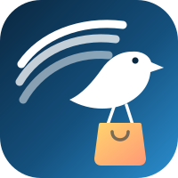

Your current logo: a blue bird carrying a scroll. It speaks to the messenger of the past; the concepts below keep that idea and add transmission and local shopping.
Mode of Communication: from the messenger bird, the runner and the post, to radio, the telephone and the screen in your hand. Three directions, each shown large, small, on dark, and as a full lockup.
Your current logo: a blue bird carrying a scroll. It speaks to the messenger of the past; the concepts below keep that idea and add transmission and local shopping.
A single line travels through the history of communication: dots (a walker), dashes (the post), then a smooth wave that forms an M (broadcast), ending in a glowing node that radiates a signal. Reads at a glance as "M" and as "transmission".
A speech bubble drawn as a shopping bag, with a signal rising from inside it. Communication and local shopping in one shape. The strongest and simplest as an app icon.
The messenger bird from your current logo, carried forward: its wing is three transmission arcs, and it carries a small shopping bag instead of a scroll. The most direct link to your story and your existing brand.
